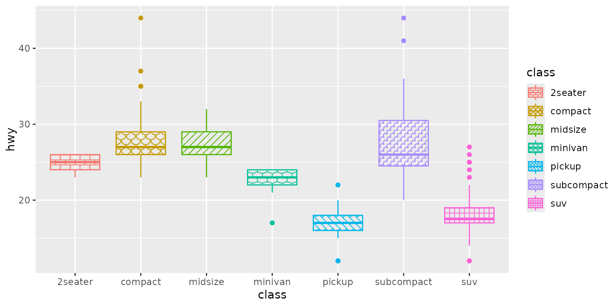
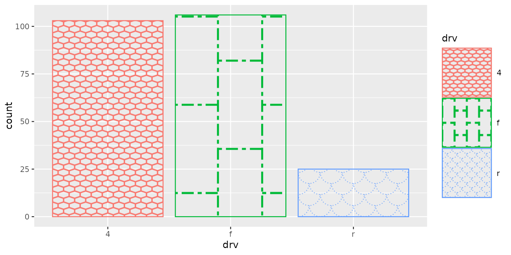

Patterned Fills for ggplot.
Arguments
- patterns
A vector of pattern names that will be subset or recycled as needed to match the levels of the
aes()fill variable. If integers are provided, they are mapped to predefined patterns. See "Details" and "Pattern Names" sections below. Default:seq_len- fg
Foreground color for the pattern's lines, or
NAto use the color scale for theaes()color variable. Default:NA- bg
Background color (or grob), or
NAto use the color scale for theaes()color variable. Default:ifelse(is.na(fg), "transparent", NA)- fade, alpha
Modify the color from the
aes()color scale. Fade will make it more white, and alpha will make it more transparent. Both values must be between 0 and 1, inclusive, where 1 means unchanged. Default:fade = ifelse(is.na(fg), 1, 0.6), alpha = 1- angle
How much the rotate the pattern, given in degrees clockwise. Default:
0- width
The width of the pattern tile. Assumed to be millimeters unless set otherwise with
unit(). Default:unit(1/10, 'npc')- height
The height of the pattern tile, or
NAto matchwidth. Assumed to be millimeters unless set otherwise withunit(). Default:NA- lwd
Line width. A positive number. See
graphics::par()for additional details. Default:1- lty
Line type. One of
"solid","dashed","dotted","dotdash","longdash", or"twodash". Seegraphics::par()for additional details. Default:"solid"- fun
A function for modifying graphical parameters immediately before rendering. Should accept two parameters:
env, an environment that the function should modify, androw, the row of transformed data that ggbuild has constructed for this grob (including aes mappings). The function should return a gTree or an error to force returning from the parent function immediately, orNULLto continue processing with the updatedenv. Default:NULL- min_size
Minimum size of the pattern to draw. Applies to both width and height. Useful for avoiding CPU and memory overhead on tiny graphical elements. Assumed to be millimeters unless set otherwise with
unit(). Default:2
Value
A ggplot2::discrete_scale() object.
Details
All of the parameters can accept a vector of values or a function
that takes n as an argument and returns the value(s) to use. The
values are subset or recycled as needed to obtain the same number
as length(levels(fill)), where fill is the variable defined by
aes(fill = ).
Pattern Names
Base name:
Pattern names must always begin with one of
"brick","chevron","fish","grid","herringbone","hexagon","octagon","rain","saw","shingle","rshingle","stripe", or"wave".These names support partial matching, e.g.
"her","herring", and"herringbone"are all valid. However, tiling designs may be added in the future, so it is recommended to use the full names in finished code.
Angle modifier:
A number immediately following the tiling design, such as
"stripe45","fish180", or"saw20".Is added to the
angleargument;fill_pattern("brick45", angle=45)is equivalent tofill_pattern("brick90").
Width and height modifier:
An underscore followed by a single size to be used for both width and height.
Or, an underscore followed by the new width and height separated by a colon.
Can be absolute sizes (
"grid_4"or"hex_5mm:0.1npc") or relative to thewidthandheightarguments ("saw_sm"or"brick_*2:/2"). The shorthand values"xs","sm","md","lg", and"xl"are equivalent to"/4","/2","1","*2", and"*4", respectively.
Line width and style:
An underscore, followed by a number, followed by one of
"solid","dashed","dotted","dotdash","longdash", or"twodash". For example,"shingle_0.5dashed"or"wave_2solid".The number component is optional, so
"oct_longdash"is also valid, and will uselwdfor the line width.To specify just the line width, suffix the number with "lwd":
"grid_2lwd"will useltyfor the line style.
Combinations:
Modifiers can be combined in any order. For example,
"hex_lg:xl_2dotted"or"grid45_dashed_1.4lwd_:6mm_sm:".
See also
fill_pattern() for base grid graphics integration.
Examples
# \donttest{
library(ggplot2)
library(fillpattern)
ggplot(mpg, aes(x = class, y = hwy, color = class, fill = class)) +
geom_boxplot() +
scale_fill_pattern()

ggplot(mpg, aes(x = drv, y = hwy, color = drv, fill = drv)) +
geom_violin() +
scale_colour_brewer(palette = "Set1") +
scale_fill_pattern(c("brick", "stripe45", "grid45_lg"), fg = "black")
ggplot(mpg, aes(x = drv, color = drv, fill = drv)) +
geom_bar() +
scale_fill_pattern(
patterns = c("hex_sm", "brick90_xl", "fish"),
lty = c("solid", "twodash", "dotted"),
lwd = c(2, 3, 1) ) +
theme(legend.key.size = unit(2, 'cm'))

# }